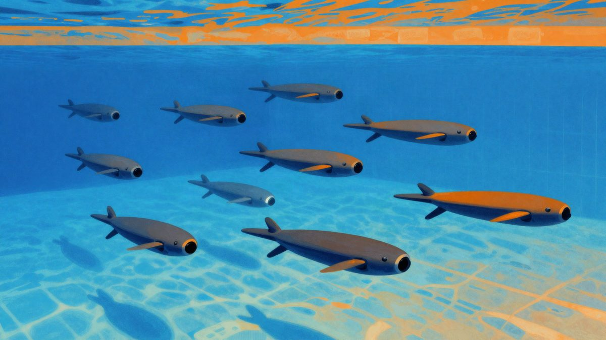

Kineski tim je postavio rekord: 116 podvodnih dronova u jednom roju

Istraživači s kineskog Sveučilišta Northwestern Polytechnical postavili su rekord s 116 podvodnih dronova TH-618 koji su u bazenu samostalno izvodili formacije, a rekord je priznao Guinness. Sveučilište je na američkom popisu razvojnih partnera kineske vojske, a tvrtka koja je sudjelovala navodi civilnu i vojnu primjenu roja.
Istraživači s kineskog Sveučilišta Northwestern Polytechnical (NWPU) postavili su rekord za najveći roj podvodnih dronova, koji je priznao i Guinness. U kolovozu 2026. u bazenu od otprilike 50 sa 20 metara pustili su 116 dronova TH-618, a oni su samostalno izvodili niz formacija i manevara. Test je proveden zajedno s tvrtkom Xi'an Tianhe Maritime Technologies, podružnicom proizvođača obrambene opreme Xian Tianhe Defense Technology.
Sveučilište se nalazi na američkom popisu kao razvijatelj tehnologija za kinesku vojsku (PLA). South China Morning Post piše da sveučilište tvrdi kako su rojevi podvodnih letjelica dugo bili jedan od temeljnih izazova u području podvodne inteligentne opreme, a da ovaj rezultat znači iskorak u velikoj, koordiniranoj navigaciji podvodnih besposadnih sustava.
Kako rade TH-618
TH-618 izgledaju kao duge cijevi s četiri propelera i kamerom. Dugi su oko 60 centimetara, široki oko 15, teški oko 5 kilograma, a domet im je nešto veći od 29 kilometara uz oko 8 sati neprekidnog rada. Za navigaciju koriste kamere iz pametnih telefona na prednjoj strani, a AI sustavi u stvarnom vremenu korigiraju rutu kad naiđu na smetnje ili sudare. Prema sveučilištu, dronovi mogu samostalno pratiti teren, prepoznavati orijentire, dizati se i spuštati, kontrolirati dubinu i brzinu te lebdjeti u vodi.
Navigacija pod vodom puno je teža nego u zraku jer nema bežične komunikacije ni satelitskog pozicioniranja. Slaba vidljivost i veliki tlak dodatno otežavaju koordinaciju, pa se dronovi moraju oslanjati na podvodne senzore, detekciju ciljeva i akustičnu komunikaciju. U ovom testu oslanjali su se isključivo na vizualne podatke. Za oko 34 minute prešli su više od 500 metara bez ljudske intervencije.
Bazen je slaba zamjena za more, pa je do primjene u stvarnim operacijama još dug put. Test ipak pokazuje u kojem smjeru Kina razvija podvodne programe i programe dronova.
Civilna i vojna primjena
Iz Xi'an Tianhe Maritime Technologies navode da bi roj mogao nadzirati vodenu infrastrukturu i služiti za istraživanja, na primjer za pregled plinovoda ili kartiranje morskog dna. Isti pristup mogao bi poslužiti i kao osnova za podmorničke operacije i obranu. U srpnju 2026. dvije istraživačke ustanove povezane s PLA objavile su prijedlog da roj dronova u zraku, na površini i pod vodom patrolira Južnim kineskim morem.
Kina je već prva zemlja koja je razvila besposadne podmornice pune veličine, a navodno razvija i najmanje dvije podvodne matične podmornice za lansiranje besposadnih podmornica.
Kina nije sama u toj utrci. Ukrajina je u prosincu 2025. izvela prvi uspješan podvodni dronski napad na neprijateljsku podmornicu, pogodivši rusku podmornicu u Novorossijsku. U Europi Poljska, Njemačka, Portugal i Slovenija rade na rojevima podvodnih dronova u sklopu projekta Europske obrambene agencije. Američka vojska objavila je u srpnju 2026. javni poziv za sustave obrane od podmorničkih dronova.
Izvor: Engadget